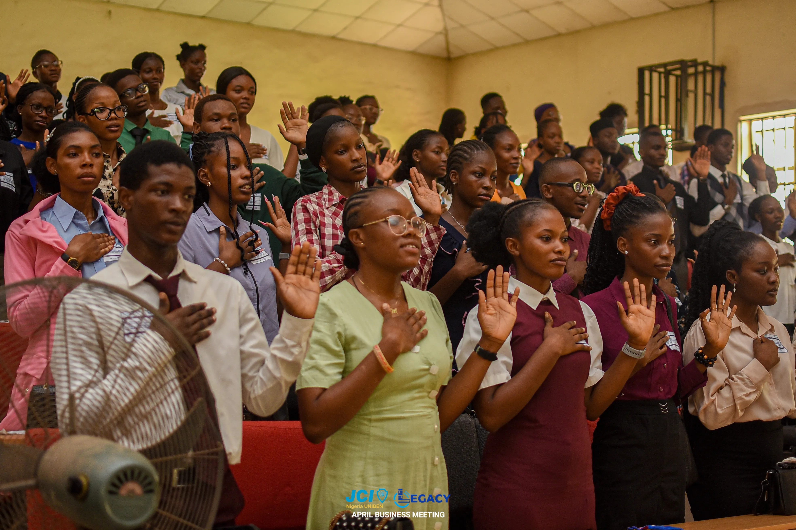

Personal Development
Upskill yourself at your own pace through comprehensive training programs, workshops, and mentorship opportunities.
Learn MoreJCI which stands for Junior Chamber International is a global network of young enterprising leaders from ages 18-40. It develops its members by equipping them to their fullest potential as leaders for a changing world.
JCIN UNIBEN is the first and largest collegiate chapter. We equip young people with essential skills to become notable leaders who will thrive in a globalized world and create sustainable changes.
We believe:
That faith in God gives meaning and purpose to human life;
That the brotherhood of man transcends the sovereignty of nations;
That economic justice can best be won by free men through free enterprise;
That government should be of laws rather than of men;
That earth's great treasure lies in human personality;
And that service to humanity is the best work of life.
To provide leadership development opportunities that empower young people to create positive change.
To be the foremost global network of young leaders.
Upskill yourself at your own pace through comprehensive training programs, workshops, and mentorship opportunities.
Learn MoreStand out not just as a student but also as an exceptional entrepreneur with our business development programs.
Learn MoreExecute community projects and lay your impact in communities around you while building your legacy.
Learn MoreConnect with like-minded individuals worldwide and participate in global initiatives and exchanges.
Learn More"Joining JCIN UNIBEN in my 100 level was the best decision I made to grow as a leader, professional, and person beyond academics."EMMANUEL IGE
"Despite thinking I wouldn't fit in, joining JCIN UNIBEN turned out to be one of my best decisions as it gave me opportunities to grow, perform, connect, and thrive beyond my creative expectations."TESTIMONY ODEY
"JCI sparked my leadership journey, built resilience, inspired meaningful connections, and ignited a lifelong commitment to impact—proving it's more than a group, it's a movement."EBEIGBE NOEL
Take the first step towards becoming a global leader. Join JCIN UNIBEN today and be part of a movement that's shaping the future.
Stay updated with our latest programs, meetings, and activities. All our events are listed below. Click on any event for more details or add them to your calendar!